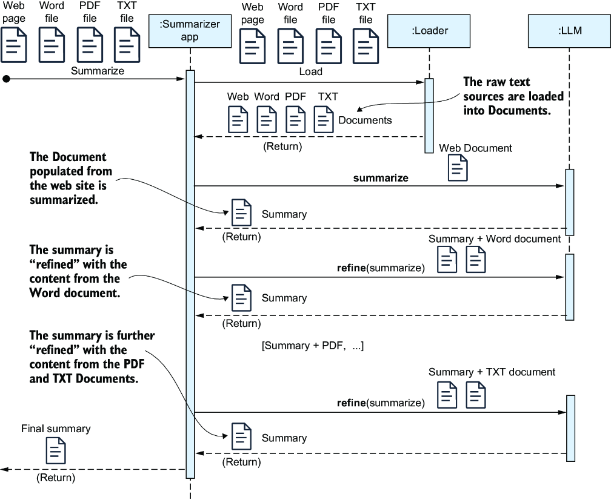
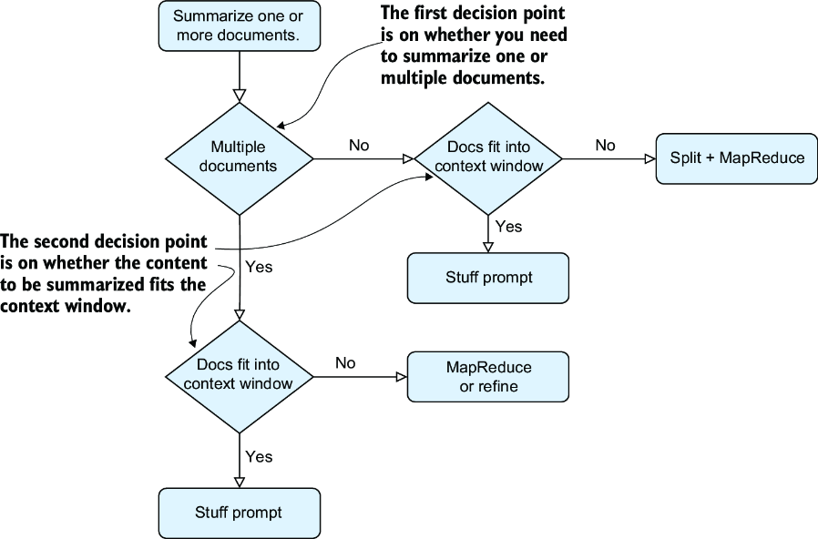

在第一章中，我们探讨了三种主要的LLM应用类型：摘要引擎、聊天机器人和AI智能体。在本章中，你将开始使用LangChain构建实用的摘要链，重点侧重于使用LangChain表达式语言（LCEL）来应对各种真实场景。链是一系列相互连接的操作，其中一步的输出成为下一步的输入—这对于自动化摘要等任务来说是理想的选择。这项工作为在下一章构建更高级的摘要引擎奠定了基础。
摘要引擎对于自动化处理大量文档的摘要任务至关重要，这项工作即使借助ChatGPT等工具进行人工处理，也既不切实际又成本高昂。从摘要引擎入手是开发大语言模型应用程序的一个实用切入点，它为更复杂的项目打下了坚实基础，并展现了LangChain的能力，我们将在后续章节中进一步探讨。
在我们开始构建之前，我们将探讨不同的摘要技术，每种技术都适用于特定场景，包括大型文档、内容整合和处理结构化数据。您已经在第2章中使用PromptTemplate处理过小型文档的摘要，因此我们将跳过这部分，专注于更复杂的示例。
如第一章所述，每个大型语言模型都有一个最大提示词尺寸，也称为上下文窗口。尽管流行的大语言模型的上下文窗口不断增长，您仍可能遇到文档超出所选模型的token限制的情况。在这些情况下，您可以采用如图3.1所示的MapReduce方法。
定义 大语言模型上下文窗口是指在单次提示词中可输入给语言模型的文本总量上限—包括指令和上下文。不同模型对上下文窗口支持的token数量各异，其中每个token大致对应一个单词。例如，GPT-3.5最多可处理16,000个token，GPT-4和Claude 3支持多达100,000个token，而更新的模型如GPT-5和Gemini可以处理超过100万个token。
当处理超出大语言模型上下文窗口的文档时，一种常见策略是将文本拆分为可管理的片段，为每个片段生成摘要，然后基于这些中间结果生成最终摘要。首先，你需要使用分词器将文本分割成片段。分词器读取文本并将其拆分为token，这些token是文本的最小单位，通常是单词的一部分。对文档进行分词后，token会被分组为特定大小的片段。这让你可以控制大语言模型处理的内容大小，并确保token数量保持在你的大语言模型提示词限制内。在这里，我将向你展示如何使用TokenTextSplitter，它是tiktoken包的一部分，是由OpenAI开发的一个分词器。
首先打开终端，为本章节的代码创建一个名为ch03的新文件夹。然后，创建并激活一个虚拟环境：
C:\Github\building-llm-applications>md ch03 C:\Github\building-llm-applications>cd ch03 C:\Github\building-llm-applications\ch03>python -m venv env_ch03 C:\Github\building-llm-applications\ch03>.\env_ch03\Scripts\activate (env_ch03) C:\Github\building-llm-applications\ch03>
接下来，安装所需的包——tiktoken、notebook和langchain。如果您已从GitHub克隆了代码仓库（https://mng.bz/WwvW）或从曼宁出版社网站下载了代码压缩文件，请使用以下命令安装依赖：
C:\Github\building-llm-applications\ch03>pip install -r requirements.txt -i https://pypi.tuna.tsinghua.edu.cn/simple
安装完成后，启动Jupyter Notebook：
(env_ch03) C:\Github\Building-llm-applications\ch03>jupyter notebook
现在打开或创建一个Notebook，并将其命名为03-summarization_examples.ipynb。最后，保存该Notebook。
让我们使用从古登堡计划网站（www.gutenberg.org）下载的文本文件Moby-Dick.txt来总结《白鲸记》这本书。你可以在我的GitHub页面本章节的子文件夹中找到Moby-Dick.txt文件（https://mng.bz/DwyV）。将此文件放到你的ch03文件夹中，并将文本加载到一个变量里：
with open("./Moby-Dick.txt", 'r', encoding='utf-8') as f:
moby_dick_book = f.read()
注意 请记住，在完整的《白鲸记》文本上运行代码可能会花费较高。提供的Moby-Dick.txt文件是一个简短版本，仅包含五个章节和大约18,000个token。使用此版本运行几次代码应该不会花费太多。然而，如果您打算进行多次测试，您可能希望进一步减小文件大小以节省费用。每次执行包含LLMChain模块的链时，您都会被计费。如果预算允许，您可以使用该书的完整版本，名称为Moby-Dick_ORIGINAL_ EXPENSIVE.txt。完整版的《白鲸记》文本大约有300,000个单词，或约350,000个token。使用GPT-5（每百万token费用为1.25美元），处理完整文本将花费约0.37美元。多次运行会累积费用。如果您切换到GPT-5-nano（每百万token费用为0.05美元），成本将降至约0.015美元，便宜得多了。
我将在第八章详细讨论分块策略—例如按大小和内容结构进行分块。现在，让我们将文本分割成每个约3000个token的块，以模拟比我们将要使用的GPT-5-nano模型更短的上下文窗口。
开始分割之前，你需要做一些准备工作。首先，导入必要的库：
from langchain_openai import ChatOpenAI from langchain_text_splitters import TokenTextSplitter from langchain_core.prompts import PromptTemplate from langchain_core.output_parsers import StrOutputParser from langchain_core.runnables import RunnableLambda, RunnableParallel import getpass
接下来，使用getpass函数获取您的OpenAI API密钥：
OPENAI_API_KEY = getpass.getpass('输入你的OPENAI_API_KEY')
系统将提示您输入您的OPENAI_API_KEY。之后，请在一个新的NoteBook单元格中实例化OpenAI模型：
llm = ChatOpenAI(openai_api_key=OPENAI_API_KEY,model_name="gpt-5-nano")
现在，您已准备好设置第一条链，该链将文档分割成指定大小的块。在本章中，您将学习大语言模型表达式语言（LCEL）的基础知识，更详细的探讨将在下一章进行：
text_chunks_chain = (
RunnableLambda(lambda x:
[
{
'chunk': text_chunk,
}
for text_chunk in
TokenTextSplitter(chunk_size=3000,
↪chunk_overlap=100).split_text(x)
]
)
)
注意 LangChain链是由实现了Runnable接口的组件构成的，这是一个Python抽象类，定义了组件如何接收输入、处理并返回输出。任何实现了Runnable接口的类都可以成为链的一部分。RunnableLambda允许你将任何Python可调用对象转换为Runnable，从而轻松地将自定义函数集成到LangChain链中。它类似于Python的lambda表达式，你可以通过参数运行代码，并选择性地返回输出，而无需定义完整的函数。使用RunnableLambda，你可以创建一个链组件，而无需编写单独的类来实现Runnable接口。在本示例中，由RunnableLambda包装的代码通过x参数接收字符串形式的输入文本，并将其传递给split_text()函数，该函数将文本分割成块。
下一步是设置映射链，它将为每个文档块运行一个摘要提示词，并确保在后续合并之前，文本的每一部分都能被独立处理：
summarize_chunk_prompt_template = """
编写以下文本的简洁摘要，并包含主要细节。
文本: {chunk}
"""
summarize_chunk_prompt =
↪PromptTemplate.from_template(summarize_chunk_prompt_template)
summarize_chunk_chain = summarize_chunk_prompt | llm
summarize_map_chain = (
RunnableParallel (
{
'summary': summarize_chunk_chain | StrOutputParser()
}
)
)
在这段代码中，管道操作符（|）用于将组件链接在一起，将一个对象的输出作为下一个对象的输入。例如，summarize_ chunk_prompt被管道传输到大语言模型(llm)，这意味着生成的提示词被直接发送给模型。同样地，模型的输出被管道传输到StrOutputParser()，后者将模型的响应转换为干净的文本字符串。
注意 在这个链中，我使用了 RunnableParallel，它类似于 RunnableLambda，但它作用于一个序列，并行处理每个元素。在本示例中，我们将文本块的序列输入到 summarize_map_chain，每个块将由内部的 summarize_ map_chain 并行进行摘要。
设置合并链（用于汇总每个文档块摘要的过程）遵循与映射链类似的过程，但需要稍多的设置。首先定义提示词模板：
summarize_summaries_prompt_template = """
编写以下文本的简洁摘要，
该文本整合了多个摘要，并包含主要细节。
文本：{summaries}
"""
summarize_summaries_prompt =
↪PromptTemplate.from_template(summarize_summaries_prompt_template)
接下来，您可以配置合并链：
summarize_reduce_chain = (
RunnableLambda(lambda x:
{
'summaries': '\n'.join([i['summary'] for i in x]),
})
| summarize_summaries_prompt
| llm
| StrOutputParser()
)
合并链包含一个lambda函数，它将映射链中的摘要合并为一个字符串。随后，该字符串由summarize_ summaries_prompt提示词处理，从而生成合并内容的最终摘要。
最后，我们将文档分割链、映射链和合并链组合成一个单一的MapReduce链：
map_reduce_chain = ( text_chunks_chain #1 | summarize_map_chain.map() #2 | summarize_reduce_chain #3 )
这种设置能高效地将输入文档分割成多个块，对每个块进行摘要，然后将这些摘要汇总成最终的摘要结果。summarize_map_chain上的map()函数对于实现块的并行处理至关重要。
一切现已准备就绪。使用以下命令启动大型文档的MapReduce摘要生成（如果您使用的是OpenAI免费套餐，此操作可能会因429 Rate Limit错误而失败）：
summary = map_reduce_chain.invoke(moby_dick_book)
如果你运行print(summary)，你将得到类似如下的输出：
《白鲸记》或《鲸鱼》电子书由古登堡计划发布，其引言概述了该书的获取方式和更新情况，首版电子书发布于2001年6月，最新版则在2021年8月。故事以叙述者伊希梅尔开篇，他为了摆脱忧郁状态而寻求海上慰藉，展现了海洋相较于城市生活的吸引力。他反思了自己加入捕鲸航行的原因，源于对鲸鱼的迷恋和对冒险的渴望。抵达新贝德福德后，伊希梅尔在寻找住宿时遇到困难，最终落脚于"喷水者客栈"，在那里他遭遇了混乱的环境和一位名为奎奎格的神秘鱼叉手。 当伊希梅尔与起初误认为自己是食人族的奎奎格同床共枕时，他逐渐克服了内心的恐惧。共度第一夜后的清晨，凸显出他们之间奇特却悄然滋长的羁绊，伊希梅尔观察到奎奎格独特的习俗和彬彬有礼的举止，由此深刻揭示了命运、选择，以及捕鲸业中对未知世界的迷人吸引力
警告 如前所述，运行map_reduce_chain会产生费用；您想要生成摘要的文本越长，费用就越高。因此，如果您想控制开支，可以考虑进一步缩短输入文本（在我们的例子中，是使用Moby-Dick .txt电子书文件）。此外，请确保您的OpenAI API信用余额保持为正数，以避免出现如下错误：RateLimitError: Error code: 429 - {'error': {'message': 'You exceeded your current quota, please check your plan and billing details [...]。'如有必要，请登录OpenAI API页面，导航到设置 > 账单，并设置至少5美元的信用额度。
现在让我们进入下一个使用场景：跨文档摘要。在这个使用场景中，目标是从多个来源整合信息，而不是处理单个长文本。
您可以轻松学习如何汇总来自不同数据源的信息，例如维基百科或本地文件（包括Microsoft Word、PDF和文本格式）。如图3.2所示，此过程类似于上一节中使用的MapReduce技术。

map操作以生成摘要。然后，这些独立的摘要通过reduce操作进一步合并为一份单一的摘要。在图3.2的时序图中，来自每个原始文本源的内容被加载到相应的Document实例中。在map操作期间，这些Document对象被转换为独立的摘要，然后在reduce操作期间合并成一个单一的摘要。
接下来，我将向您介绍另一种精炼技术，如图3.3所示。采用这种方法，最终摘要通过迭代方式对当前最终摘要与其中一个文档块的组合进行归纳来逐步构建。这个过程持续进行，直到所有文档块都被处理完毕，从而完成最终摘要。

在这种方法中，您通过逐步完善来构建最终摘要。每份文档都会连同当前摘要草稿一起发送给大语言模型进行归纳。这一过程持续进行，直到所有文档处理完毕，从而得出最终摘要。MapReduce 方法非常适合归纳大量文本，在处理负荷可接受的情况下，即使损失部分内容也无妨。相比之下，当您希望确保最终摘要能完整捕捉每个部分的精髓时，精炼技术则更为适用。
在归纳一份大型文档时，通常需要先将其拆分为较小的片段，每个片段视为独立的文档。在本示例中，我们已有一组现成的文档，因此无需进行任何拆分。如何创建每个Document对象将取决于文本的来源。我将向您展示如何归纳来自四种不同来源的内容：一个维基百科页面以及存储在本地文件夹中的多种格式文件（TXT、DOCX、PDF）。所有内容都与Paestum相关，这是公元前500年左右位于意大利南部奇伦托海岸的一个希腊殖民地。您将为每个数据源使用相应的DocumentLoader，这些加载器选自第1章第1.3节中介绍的众多LangChainDocument对象模型。
让我们从维基百科的内容开始。虽然你可以使用WebBaseLoader从基于网络的数据内容创建文档，但特定的加载器是为从特定网站检索内容而定制的，例如用于互联网电影剧本数据库（IMSDb）网站的IMSDbLoader，用于AZLyrics网站的AZLyricsLoader，以及用于维基百科网站的WikipediaLoader。
如果您遵循了3.1节开头的软件包安装说明，那么您应该已经安装了必要的加载器包，包括用于Word文件的docx2txt（由Docx2txtLoader使用）和用于PDF的pypdf（由PyPDFLoader使用）。现在，您可以从Paestum维基百科页面导入内容：
from langchain.document_loaders import WikipediaLoader wikipedia_loader = WikipediaLoader(query="Paestum", load_max_docs=2) wikipedia_docs = wikipedia_loader.load()
注意 WikipediaLoader可能会从请求文章中引用的其他维基百科超链接加载内容。例如，Paestum文章引用了Paestum国家考古博物馆、卢卡尼亚地区、卢卡尼亚人以及赫拉和雅典娜神庙，从而导致加载了额外内容。因此，它返回的是一个Document列表，而非单个Document对象。我已将返回文档的最大数量设置为2以节省摘要生成成本，但您可以根据需要进行调整。
首先，从GitHub下载或拉取Paestum文件夹，并将其放置到您本地的ch03目录中（如果您没有克隆整个代码仓库）。ch03目录内的Paestum子文件夹包含三个文件：
Paestum-Britannica.docx—内容源自大英百科全书网站。PaestumRevisited.pdf—节选自斯德哥尔摩大学提交的硕士论文《重访Paestum》。该节选仅包含四页，但您可以使用位于同一文件夹中的完整文档。(PaestumRevisited-StocholmsUniversitet.pdf). Paestum-Encyclopedia.txt—内容来自于网站Encyclopedia.com. 以下是加载这些文件到对应文档的流程：
from langchain.document_loaders import Docx2txtLoader
from langchain.document_loaders import PyPDFLoader
from langchain.document_loaders import TextLoader
word_loader = Docx2txtLoader("Paestum/Paestum-Britannica.docx")
word_docs = word_loader.load()
pdf_loader = PyPDFLoader("Paestum/PaestumRevisited.pdf")
pdf_docs = pdf_loader.load()
txt_loader = TextLoader("Paestum/Paestum-Encyclopedia.txt")
txt_docs = txt_loader.load()
文档变量（word_docs、pdf_docs、txt_docs）之所以采用复数形式，是因为加载器总是返回一个文档列表，即使该列表仅包含一个元素。
注意 您可能已经注意到，我们使用TextLoader直接从Paestum-Encyclopedia.txt创建了一个Document对象数组，并且你可能会疑惑为什么之前Moby-Dick.txt文件是用Pythonfile阅读器读取的。在那种情况下，目的是将内容分割成特定数量的token以适应大语言模型提示词，因此需要手动为每个部分创建Document对象。
现在，您可以将来自不同来源的所有文档合并到一个单一的Document列表中。使用如下代码来实现：
all_docs = wikipedia_docs + word_docs + pdf_docs + txt_docs
当所有内容都编译完成后，您就可以使用精炼技术来归纳内容了。下一步是创建一个生成最终摘要的链。
现在一切准备就绪，您可以创建一个链来逐步生成最终摘要。首先导入必要的模块：
from langchain_openai import ChatOpenAI from langchain_core.prompts import PromptTemplate import getpass
接下来，获取 OPENAI_API_KEY，并像之前一样设置大语言模型：
OPENAI_API_KEY = getpass.getpass('输入你的OPENAI_API_KEY')
llm = ChatOpenAI(openai_api_key=OPENAI_API_KEY,model_name="gpt-5-nano")
现在定义用于归纳单个文档的相关提示链：
doc_summary_template = """为以下文本撰写一份简洁的摘要：
{text}
文档摘要："""
doc_summary_prompt = PromptTemplate.from_template(doc_summary_template)
doc_summary_chain = doc_summary_prompt | llm
接下来，通过迭代方式将当前摘要与额外文档的摘要相结合，来设置用于优化摘要的链：
refine_summary_template = """
你必须根据当前已生成的精炼摘要以及一份额外文档的内容，生成最终摘要。
这是当前已生成的精炼摘要：
{current_refined_summary}
这是额外文档的内容：{text}
仅当额外文档的内容有用时才使用它，否则直接返回当前完整的摘要。"""
refine_summary_prompt =
↪PromptTemplate.from_template(refine_summary_template)
refine_chain = refine_summary_prompt | llm | StrOutputParser()
最后，定义一个函数，循环遍历每个文档，使用doc_summary_chain对其进行摘要，并使用refine_chain来精炼整体摘要：
def refine_summary(docs):
intermediate_steps = []
current_refined_summary = ''
for doc in docs:
intermediate_step = \
{"current_refined_summary": current_refined_summary,
"text": doc.page_content}
intermediate_steps.append(intermediate_step)
current_refined_summary = refine_chain.invoke(intermediate_step)
return {"final_summary": current_refined_summary,
"intermediate_steps": intermediate_steps}
现在，您可以通过在准备好的文档列表上调用refine_summary()来启动摘要生成过程：
full_summary = refine_summary(all_docs)
打印 full_summary 对象将显示 final_summary 下的最终摘要以及 intermediate_steps 下的中间步骤。虽然为了方便起见，结果步骤被缩短了，但我鼓励您观察摘要是如何在每个阶段演变的：
print(full_summary )
以下是输出内容的一个摘录：
{'final_summary': "**最终摘要:**\n\nPaestum是一座古希腊城市，位于大希腊地区的第勒尼安海沿岸，约公元前600年由锡巴里斯的定居者建立，最初命名为波塞冬尼亚。这座城市作为希腊定居点而繁荣发展[…已缩写…]那些对古希腊文化和建筑感兴趣的人。", 'intermediate_steps': [{'current_ refined_summary': '', 'text': 'Paestum（PEST-əm，美式英语也读作PEE-stəm）是大希腊地区第勒尼安海沿岸的一座重要古希腊城市。Paestum的废墟因其三座大约建于公元前550年至450年的多立克式古希腊神庙而闻名，这些神庙保存状况极佳。城墙和圆形剧场[…已缩写…]
我们已经介绍了几种摘要技术，现在让我们稍作停顿，回顾一下所学内容。这是一个很好的时机，可以退一步思考这些方法彼此之间有何关联，以及每种方法在何时使用最为有效。
为了归纳本章内容，我提供了一个流程图来帮助你根据具体需求选择最合适的摘要技术，如图3.4所示。这里，第一个关键决策是你要归纳的是一个文档还是多个文档。如果只是一个文档且其内容在上下文窗口容量内，你可以将整个文档“塞入”单个提示词中进行摘要。如果容量不够，则使用MapReduce方法。对于多个文档，如果它们都能放入上下文窗口，你也可以将它们塞入单个提示词中。如果不行，对于大量文档可以使用MapReduce方法，或者如果你想确保每个文档的核心内容都包含在最终摘要中，则使用精炼技术。

Document对象将原始文本与元数据（如来源、页码、时间戳）封装在一起，以在处理流程中完整保留内容的溯源信息。PromptTemplate.from_template(template_ string)创建提示词模板，并通过管道操作符串联组件—例如 summarize_chunk_ chain = summarize_chunk_prompt | llm—可将提示词的输出直接传递给大语言模型。summarize_map_chain，再通过 RunnableParallel 的.map()方法，将该链同时应用于所有文本块。